عالم التعاونية VR
اختار المشهد. البس نضارة Meta Quest وافتح الصفحة من المتصفح، أو جرّبها على الكمبيوتر أو الموبايل.
التأمين الطبي
استقبال المستشفى
كلّم سارة موظفة الاستقبال ود. خالد، واسأل عن التغطية والموافقات وشبكة المستشفيات.
ادخل المشهد ←
تأمين المركبات
موقع الحادث
عبدالله معاين المطالبات معاك في موقع الحادث: نجم، ورفع المطالبة، والمساعدة على الطريق.
ادخل المشهد ←🥽 على Meta Questافتح الصفحة من متصفح النضارة، اختار المشهد، واضغط «ادخل VR».
🕹️ الحركةالعصا الشمال أو KAT VR للمشي، والليزر والـ Trigger للاختيار، وزر A للكلام.
💻 على الكمبيوترW A S D أو الأسهم للمشي، واسحب بالماوس عشان تبص حواليك.